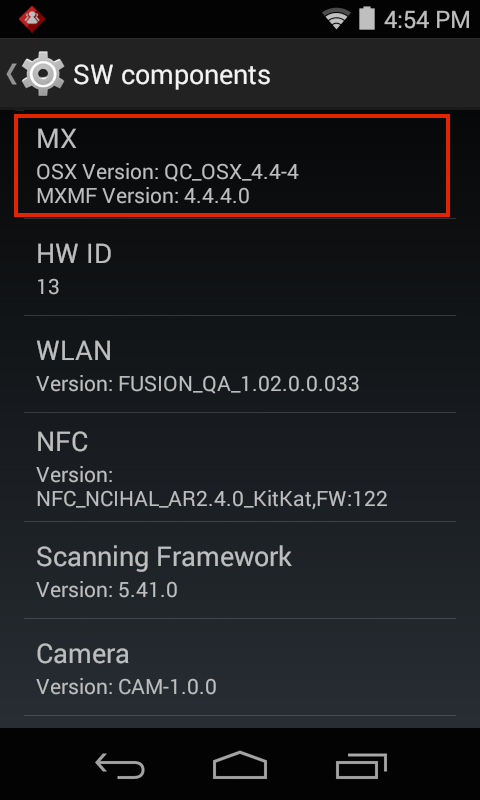
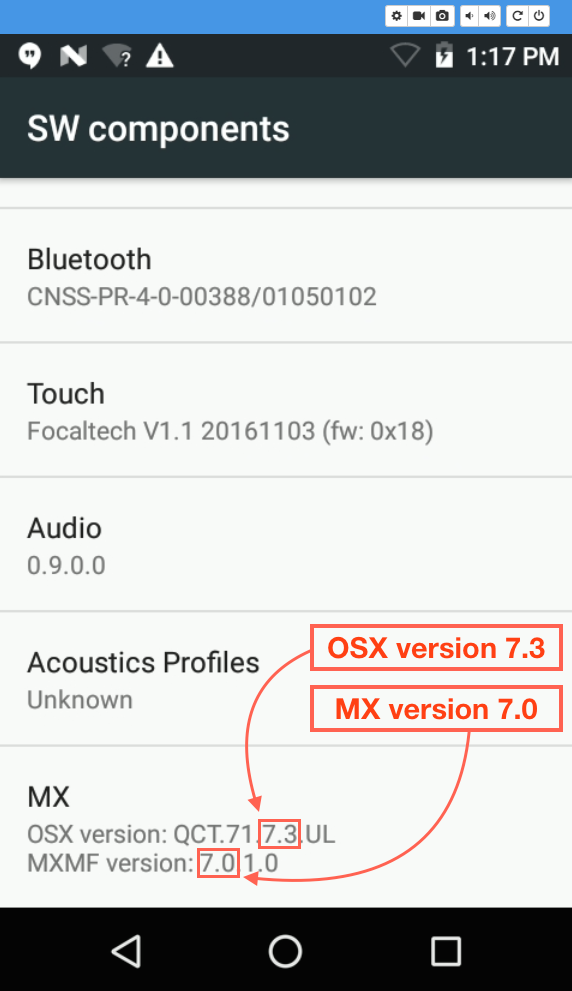
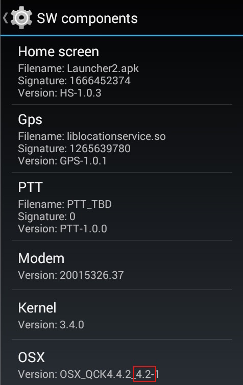
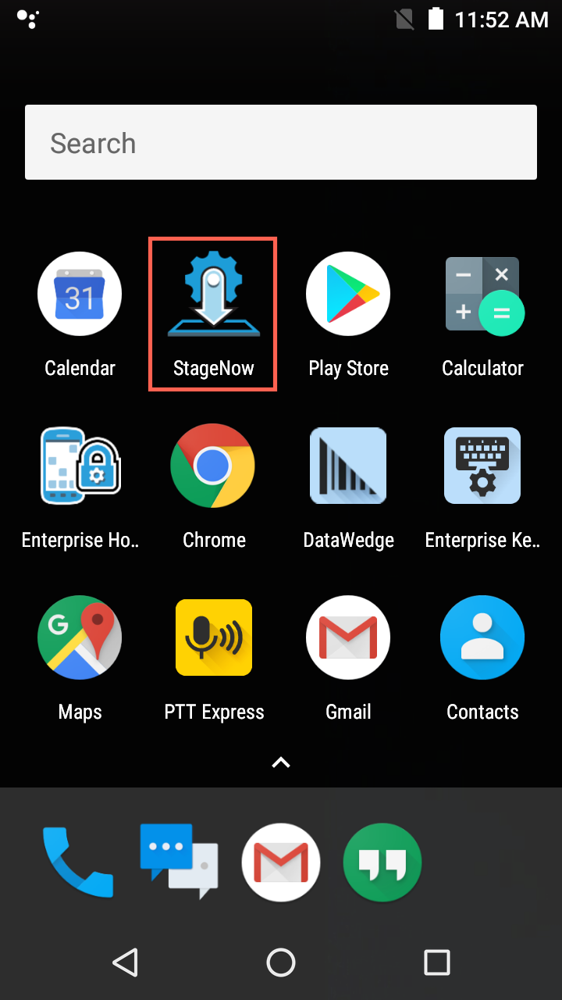
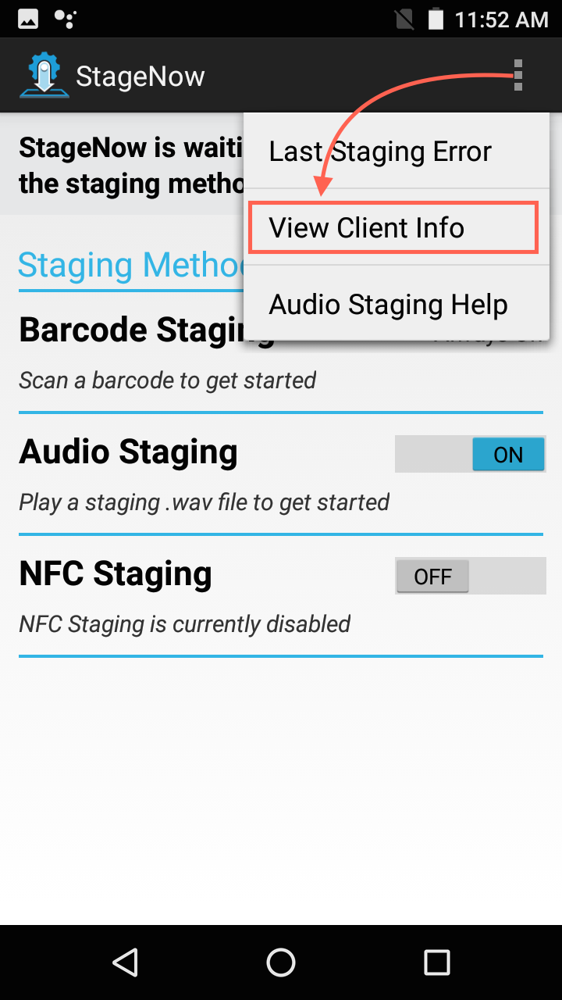
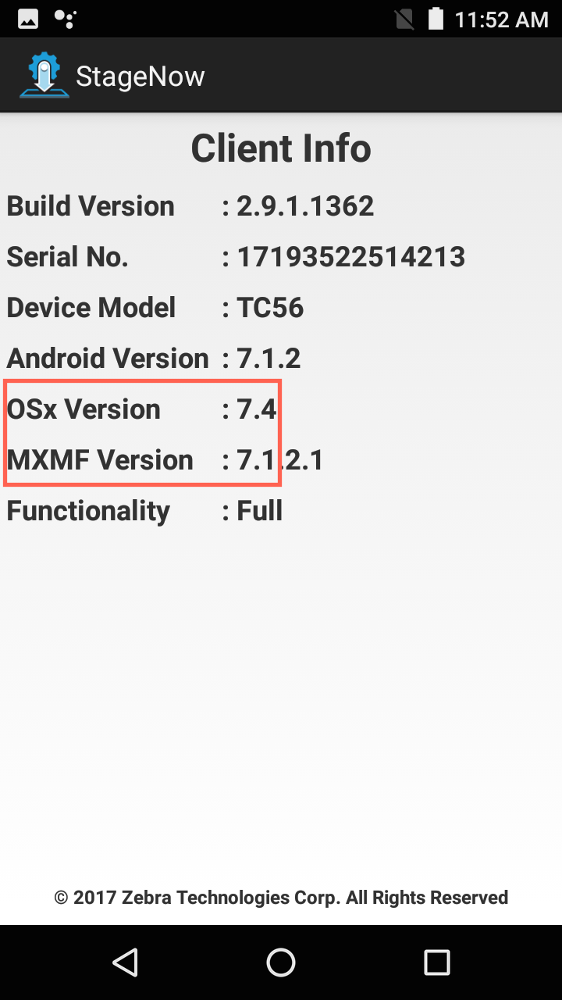

The MX/OSX versions can be obtained:
- Manually using the Settings panel on the device (not fully supported pre-KitKat)
- Manually in the StageNow client menu
- Programmatically using EMDK for Android
- By submitting XML to the MX CSP through Zebra StageNow (or EMDK and Profile Manager)
- Using adb to query a connected device from a PC or Mac
Using the Settings Panel
The Settings panel of some devices running Android versions prior to KitKat 4.4 do not display MX and OSX information. To determine the MX and/or OSX version present on such a device, one of the other procedures must be used.
To view MX and/or OSX versions using the Settings panel:
1. In the Settings panel, tap "About Device" (or "About Phone"), then tap SW Components.
2. Locate MX in the list of components.
3. On most pre-L devices, the left-most two numerical digits indicate the major and minor MX and OSX versions. On devices running Android Lollipop and higher, the first number following the letters on in OSX field still indicates the Android version (5=L, 6=M, etc.) but the full OSX major.minor version is indicated by the first two of the four digits at the end of the string.
Note: The major OSX version number always matches the major number of the Android version that it extends. For example, OSX 7.1 through 7.4 all extend Android 7.x.

Settings panel showing OSX 4.4 and MX 4.4

Settings panel of a Zebra TC20 device showing OSX 7.3 (UL) and MX 7.0
Note: On some older devices, version information is returned in two groups of digits separated by an underscore ( _ ) character. The numbers relevant to the version are those immediately following the underscore, as below:

This panel shows OSX 4.2 running Android Jelly Bean (kernel 3.4.0)
In the StageNow Client
Most devices running KitKat and higher include the StageNow client app, which is used for device configuration and management.
To view MX and OSX versions on the device using the StageNow client app:
1. Tap the StageNow client app on the device:

2. Tap the menu and select "View Client Info":

3. MX and OSX versions are displayed:

Using EMDK For Android
Version numbers can be obtained programmatically through the VersionManager Android API in EMDK using the following Java code:
// Get an instance of VersionManager
versionManager = (VersionManager) EMDKManager.getInstance(EMDKManager.FEATURE_TYPE.VERSION);
// Use the getVersion method, passing in the version_Type.mx enum
mxVersion = versionManager.getVersion(VERSION_TYPE.MX)
Submitting XML
System Administrators can obtain version numbers through Zebra's StageNow tools or a compatible mobile device management system by submitting the following XML to the MX CSP:
<wap-provisioningdoc>
<characteristic type="MX">
<parm-query name="Version"/>
</characteristic>
</wap-provisioningdoc>
The result contains the MX version (which in this case is "4.4") returned in the MXMFVersion parameter shown below:
<wap-provisioningdoc>
<characteristic type="MX" version="4.4">
<parm name="MXMFVersion" value="4.4.3.6"/>
</characteristic>
</wap-provisioningdoc>
Using ADB
The MX version can be obtained from a PC or Mac by querying a USB-connected device using the adb shell command shown below:
$ adb shell getprop
The output must be filtered using grep or a similar tool. For Zebra-branded devices, use the string ro.symbol.osx.version in the grep argument, as shown below with the result:
$ adb shell getprop | grep ro.symbol.osx.version
[ro.symbol.osx.version]: [QC_OSX_4.4-3]
The result above shows a device with MX 4.4. The number following the hyphen ("-3") indicates the release number of the latest OS patch applied to the device.
For legacy Motorola Solutions-branded devices, use the string ro.motosln.enterprise.version in the grep argument, as shown below with the result:
$ adb shell getprop | grep ro.motosln.enterprise.version
[ro.motosln.enterprise.version]: [MX_TI4AJ.1.1_3.5.1-1]
The result above shows a device with MX 3.5.
Other useful ADB shell commands:
// get the OSx version:
getprep ro.symbol.osx.version
// get the OS build version:
getprep ro.build.display.id
//get the OS build date: (helps determine build differences)
getprep ro.build.version.date
//get the device model:
getprep ro.product.device
//get the Android version:
getprep ro.build.version.release
//get the Android security patch level:
getprep ro.build.version.security_patch
Choosing an MX Version
To determine which versions of MX and OSX to target:
- List the features, capabilites and functions required of the device and its users.
- Scan the CSP list to determine which CSPs are required to deliver the desired features.
- Determine which MX and OSX versions deliver the required CSPs.
- Check which MX/OSX version is installed on the device to be targeted.
About MX
The MX Management System (MXMS) is an XML-based communication framework that provides an interface for managing the capabilities and behaviors of Zebra Android devices. This provides developers and administrators with an extensible, efficient, reliable and scalable means to configure and administer devices in their organization.
The OSX layer provides extensions to the base operating system to implement functionality not offered by Android. The root OSX version number always matches the root number of the Android version that it extends (i.e. OSX 5.x extends Android 5.x). The MX Management System provides a uniform interface into privileged and unprivileged Android APIs on the device. Some features require a specific pairing of MX and OSX versions, some are available using the Android version alone, and still others require a specific MX version plus a minimum version of Android.
The versions of MX and/or OSX on a device determine whether certain settings and/or features are supported. The Zebra-proprietary OSX layer provides extensions to the base operating system to implement functionality not offered by Android. The root OSX version number always matches the root number of the Android version that it extends. For example, OSX 4.x will always be found on devices running Android 4.x.
The same is not always true of MX, which provides a uniform interface into privileged and unprivileged APIs on a variety of Android versions, but does not extend the OS. For some features, the Android version alone is enough to determine a feature set. For others, a specific pairing of MX and Android is required, and still others need a certain combination of MX and OSX.
Related guides: